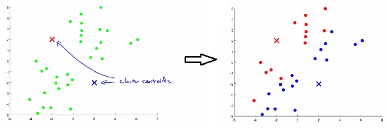
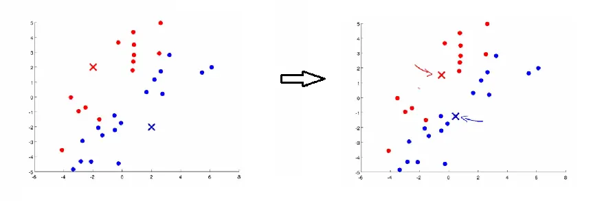
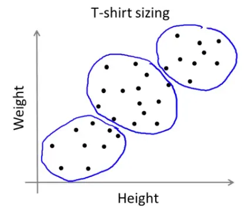
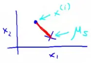
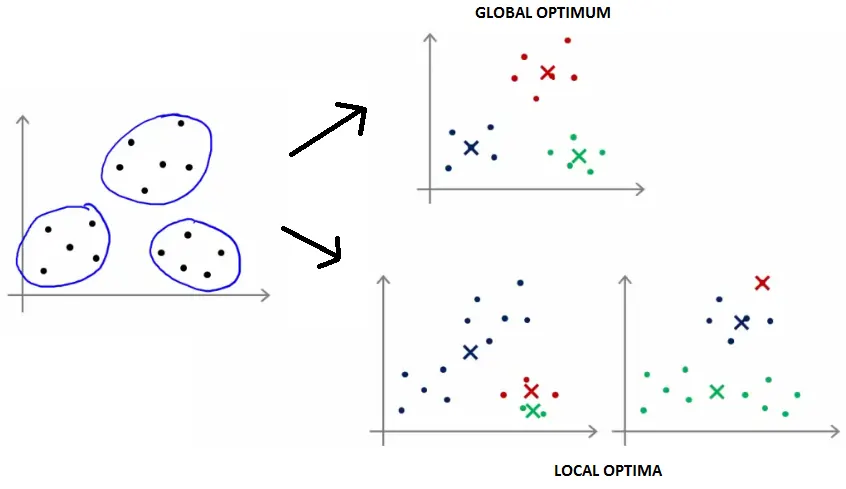
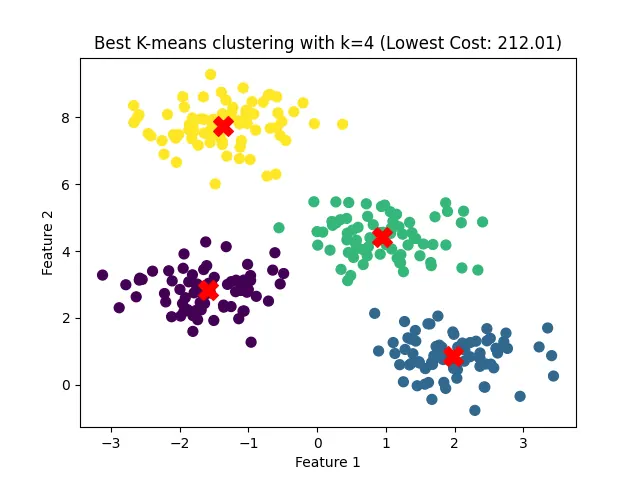
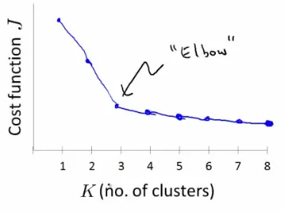
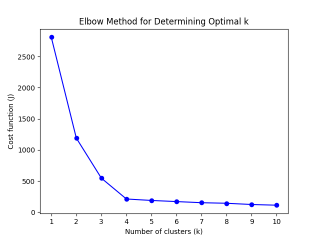

Unsupervised learning, a core component of machine learning, focuses on discerning the inherent structure of data without any labeled examples. Clustering, a pivotal task in unsupervised learning, aims to organize data into meaningful groups or clusters. A quintessential algorithm for clustering is the K-means algorithm.
I. Objective: To uncover hidden patterns and structures in unlabeled data.
II. Applications:
K-means is a widely-used algorithm for clustering, celebrated for its simplicity and efficacy. It works as follows:
Initialization: Randomly select k points as initial centroids.
Assignment Step: Assign each data point to the nearest centroid, forming k clusters.


K-means isn't limited to datasets with well-defined clusters. It's also effective in situations where cluster boundaries are ambiguous:

The goal of the K-means algorithm is to minimize the total sum of squared distances between data points and their respective cluster centroids. This objective leads to the formation of clusters that are as compact and distinct as possible given the chosen value of k.
During the K-means process, two sets of variables are pivotal:
The goal of K-means is formulated as minimizing the following cost function:
$$J(c^{(1)}, ..., c^{(m)}, \mu_1, ..., \mu_K) = \frac{1}{m} \sum_{i=1}^{m} ||x^{(i)} - \mu_{c^{(i)}}||^2$$
This function calculates the average of the squared distances from each data point to the centroid of its assigned cluster.

K-means consists of two steps, each minimizing the cost function in different respects:
These steps are iterated until the algorithm converges, ensuring both parts of the algorithm work together to minimize the cost function.
K-means can converge to different solutions based on the initial placement of centroids.

Here is a Python implementation that demonstrates the core steps of the K-means algorithm and illustrates the effect of random initialization on the final clustering outcome:
import numpy as np
import matplotlib.pyplot as plt
from sklearn.datasets import make_blobs
# Generate mock data
np.random.seed(42)
X, _ = make_blobs(n_samples=300, centers=4, cluster_std=0.60, random_state=0)
# K-means algorithm implementation
def initialize_centroids(X, k):
return X[np.random.choice(X.shape[0], k, replace=False)]
def assign_clusters(X, centroids):
return np.argmin(np.linalg.norm(X[:, np.newaxis] - centroids, axis=2), axis=1)
def move_centroids(X, labels, k):
return np.array([X[labels == i].mean(axis=0) for i in range(k)])
def compute_cost(X, labels, centroids):
return np.sum((X - centroids[labels])**2)
def k_means(X, k, max_iters=100):
centroids = initialize_centroids(X, k)
for _ in range(max_iters):
labels = assign_clusters(X, centroids)
new_centroids = move_centroids(X, labels, k)
if np.all(centroids == new_centroids):
break
centroids = new_centroids
cost = compute_cost(X, labels, centroids)
return labels, centroids, cost
# Running K-means multiple times with random initializations
def run_k_means(X, k, num_runs=100):
best_labels = None
best_centroids = None
lowest_cost = float('inf')
for _ in range(num_runs):
labels, centroids, cost = k_means(X, k)
if cost < lowest_cost:
lowest_cost = cost
best_labels = labels
best_centroids = centroids
return best_labels, best_centroids, lowest_cost
# Parameters
k = 4
num_runs = 100
# Run K-means
best_labels, best_centroids, lowest_cost = run_k_means(X, k, num_runs)
# Plotting the result
plt.scatter(X[:, 0], X[:, 1], c=best_labels, s=50, cmap='viridis')
plt.scatter(best_centroids[:, 0], best_centroids[:, 1], s=200, c='red', marker='X')
plt.title(f'Best K-means clustering with k={k} (Lowest Cost: {lowest_cost:.2f})')
plt.xlabel('Feature 1')
plt.ylabel('Feature 2')
plt.show()Below is a static plot showing the optimal K-means clustering with $k=4$. Different colors represent the clusters, and the red 'X' markers indicate the centroids. This configuration has the lowest cost after running the algorithm 100 times with various random initializations.

Choosing the optimal number of clusters (K) is a challenge in K-means. The Elbow Method is a heuristic used to determine this:

Here is a Python implementation for calculating and plotting the cost for a range of $k$ values to identify the optimal number of clusters:
import numpy as np
import matplotlib.pyplot as plt
from sklearn.datasets import make_blobs
# Generate mock data
np.random.seed(42)
X, _ = make_blobs(n_samples=300, centers=4, cluster_std=0.60, random_state=0)
# K-means algorithm implementation
def initialize_centroids(X, k):
return X[np.random.choice(X.shape[0], k, replace=False)]
def assign_clusters(X, centroids):
return np.argmin(np.linalg.norm(X[:, np.newaxis] - centroids, axis=2), axis=1)
def move_centroids(X, labels, k):
return np.array([X[labels == i].mean(axis=0) for i in range(k)])
def compute_cost(X, labels, centroids):
return np.sum((X - centroids[labels])**2)
def k_means(X, k, max_iters=100):
centroids = initialize_centroids(X, k)
for _ in range(max_iters):
labels = assign_clusters(X, centroids)
new_centroids = move_centroids(X, labels, k)
if np.all(centroids == new_centroids):
break
centroids = new_centroids
cost = compute_cost(X, labels, centroids)
return labels, centroids, cost
# Running K-means multiple times with random initializations
def run_k_means(X, k, num_runs=100):
best_labels = None
best_centroids = None
lowest_cost = float('inf')
for _ in range(num_runs):
labels, centroids, cost = k_means(X, k)
if cost < lowest_cost:
lowest_cost = cost
best_labels = labels
best_centroids = centroids
return best_labels, best_centroids, lowest_cost
# Define the function to compute the cost for different values of k
def compute_cost_for_k(X, k_values, num_runs=10):
costs = []
for k in k_values:
_, _, lowest_cost = run_k_means(X, k, num_runs)
costs.append(lowest_cost)
return costs
# Define the range of k values to test
k_values = range(1, 11)
# Compute the costs for each k
costs = compute_cost_for_k(X, k_values)
# Plot the Elbow Method graph
plt.plot(k_values, costs, 'bo-')
plt.xlabel('Number of clusters (k)')
plt.ylabel('Cost function (J)')
plt.title('Elbow Method for Determining Optimal k')
plt.xticks(k_values)
plt.show()Below is a static plot illustrating the Elbow Method for determining the optimal number of clusters ($k$). The plot shows the cost function $J$ as a function of $k$. The "elbow" point, where the rate of decrease in cost significantly changes, is a good indicator of the optimal $k$.

These notes are based on the free video lectures offered by Stanford University, led by Professor Andrew Ng. These lectures are part of the renowned Machine Learning course available on Coursera. For more information and to access the full course, visit the Coursera course page.